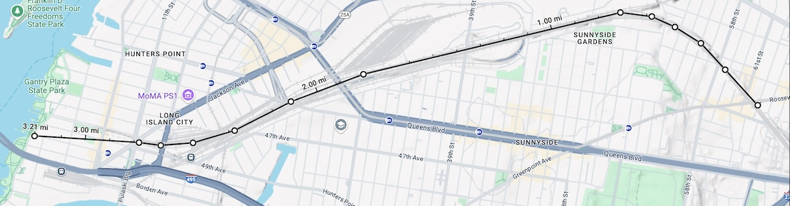
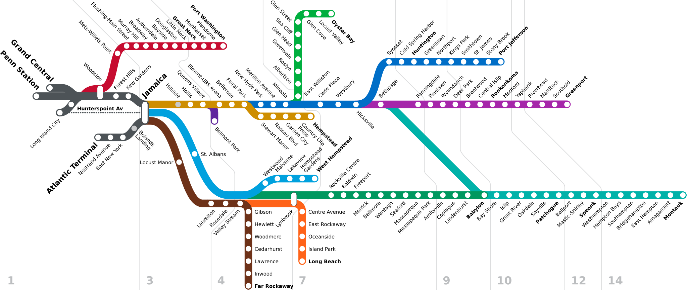
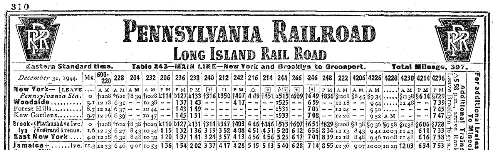

Back in July/August 2022 I made a circuit of New York and New England (photo gallery). I had a memorable encounter with a a warehouse in Albany on the Ethan Allen Express, drove a boat on Lake Champlain, took my first trip on the Long Island Rail Road, and finally rode the Mattapan Line. About a thousand miles by rail: 913 on Amtrak, 66 on the Long Island Rail Road, and uncounted on the New York and Boston subways. Calculating that number led me on a wild side quest similar to the problem I had with the Raritan Valley Line.
Calculating mileage for commuter railroads can be tricky because they often don’t publish that information in public schedules. Amtrak did until they stopped putting out printed timetables, and those numbers don’t change often. The 2022 version of the MTA website did publish that information for each station. Here’s Huntington, for example. 34.7 miles from Penn Station. If I travel between two intermediate points I can just diff the numbers and I’m good to go, right?
I don’t remember exactly when I realized there was a problem. It might have been when I was looking at Woodside, which the MTA website placed at “3.1 miles” from Penn Station. That felt wrong given that Manhattan itself is about two miles wide, and sure enough, some quick playing with the measurement tool on Google Maps showed that 3.1 miles from Woodside didn’t even get you to the East River.

Before delving into what the right answer is and how I got there, a little sidebar about the topology of the Long Island Rail Road, which is somewhat complicated. There are four western termini: Penn Station and Grand Central Madison in Manhattan, Long Island City in Queens, and Atlantic Terminal in Brooklyn. There are two main lines proceeding east from Long Island City: the Main Line, terminating in Greenport, and the Montauk branch, terminating in Montauk. The connections to Manhattan diverge from the Main Line prior to Long Island City. Physically, both the Main Line and the Montauk branch run to Jamaica, but the latter does it via a different route that has been freight-only since 2012 and is therefore not shown on public maps.

A further complexity is the Central branch between Bethpage and Babylon. If you’re reckoning physical distance between Long Island City and Montauk, you have to account for the following variables:
- Are we using the Main Line between Woodside and Jamaica, or the Lower Montauk branch between Long Island City and Jamaica?
- Are we using the Montauk branch between Jamaica and Babylon, or the Main Line via Bethpage?
Meanwhile, the MTA site simply said that Montauk was 115.8 miles from Penn Station. I’m pretty sure that’s not true, but I wasn’t sure how wrong it even was.
Measurements
There are good sources for these distances. I looked in two places: employee timetables for the Long Island Railroad (here’s one from 2012), and Official Guides of the Railways from the period when the LIRR was owned by the Pennsylvania Railroad.

From these we some very useful building blocks:
- It’s 9.3 miles from Atlantic Terminal to Jamaica.
- It’s 9.3 miles from Long Island City to Jamaica via the Main Line.
- It’s 9.0 miles from Long Island City to Jamaica via the Lower Montauk branch.
- It’s 11.3 miles from Penn Station to Jamaica via the Main Line and East River Tunnels.
It became clear to me as I examined the website that it was using the figures from the internal employee timetables but misrepresenting them as the distance to Penn, where they were actually the distance to Long Island City. They were wrong by either 2 miles or 2.3 miles, depending on whether the mileage of the physical branch the station was on was reckoned via the Main Line or the Lower Montauk branch (an MTA employee confirmed as much to me via a support ticket I opened).
Given that, I was able to accurately compute the distances I traveled:
- 31.6 miles from Woodside to Huntington
- 25.4 miles from Huntington to Jamaica
- 9.3 miles from Jamaica to Atlantic Terminal
As an aside, physical distance isn’t really relevant to traveling public. You need to know where a station is and when the trains are. The revised website (example) doesn’t include the faulty distance information at all, probably for the best. How the distances are calculated is a reminder that the Long Island Rail Road was built in the 19th century, and that the tunnels under the East River were a later innovation.